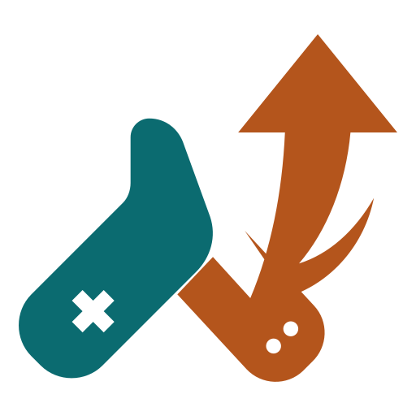

ハヤリゲー
「次に流行るゲーム」がわかるサイト
YouTubeのゲーム配信 2,374チャンネルを毎日数えています
–
–
ハヤリゲー
›
これまでの記録
今日のランキング
週・月のまとめ
ゲームを探す
このサイトについて
ハヤリゲーの更新を受け取る
Xでフォロー
Blueskyでフォロー
RSSで購読
今日の注目ゲーム
なぜ今このゲームが伸びているのか
今このゲームがアツい！
ふだんの何倍に増えたかで並べています。まだ知られていないゲームほど上に来ます
みんなが遊んでるゲーム
カードや行を押すと、そのゲームの配信一覧が開きます
これまでの記録
その日ふだんの何倍に増えたゲームと、その日のコラム。日付を押すとその日の記録に飛びます
2026.10.09
PUBG｜「#ぶいすぽGG」まだ誰も勝っていないのに、夕飯の話
都市伝説解体センター
×3.8
オーバーウォッチ2
×3.3
マビノギモバイル
×3.3
配信 1090本 / 796ch / 227ゲーム
2026.10.08
PUBG｜「#ぶいすぽGG」まだ誰も勝っていないのに、夕飯の話
マビノギモバイル
×5.0
オーバーウォッチ2
×3.9
グランツーリスモ7
×2.3
配信 1290本 / 869ch / 250ゲーム
2026.10.07
Find The Needle｜針を探すために、まず工場を建てる
PUBG
×15.0
アークナイツ：エンドフィールド
×5.0
マビノギモバイル
×5.0
配信 1211本 / 867ch / 249ゲーム
2026.10.06
Aion 2｜「年単位で待ってたMMO」が正式リリース
PUBG
×5.5
グランツーリスモ7
×4.4
Find The Needle
×3.8
配信 1060本 / 809ch / 246ゲーム
2026.10.05
Bombanana!｜悪いなのび太、このゲーム3人用なんだ
PUBG
×7.5
タンポポは耐える。
×6.0
エースコンバット・ゼロ ザ・ベルカン・ウォー
×5.0
配信 1058本 / 787ch / 221ゲーム
2026.10.04
Minecraft｜「#マイクラ肝試し2026」最終日、怖さより釣りの点数を競っている
ゼルダの伝説 ティアーズ オブ ザ キングダム
×4.2
ペルソナ5 ザ・ロイヤル
×3.8
アストラエ・オラティオ
×3.8
配信 1251本 / 894ch / 230ゲーム
2026.10.03
ほの暮しの庭｜95回目の配信の隣に、1回目の配信が並ぶ
デス桃太郎
×5.4
ファイナルファンタジーVI
×5.0
ポケットモンスター スカーレット・バイオレット
×3.8
配信 1239本 / 904ch / 231ゲーム
2026.10.02
デス桃太郎｜怖がらせるより、ツッコませる
m HOLD'EM
×5.0
タンポポは耐える。
×3.8
Nivalis Nights
×3.8
配信 1137本 / 856ch / 225ゲーム
2026.10.01
真・三國無双2 with 猛将伝 Remastered｜25年前のゲームなんだけど知ってる??
真・三國無双2 with 猛将伝 Remastered
×6.0
Teamfight Tactics
×3.8
Aion 2
×3.8
配信 1145本 / 841ch / 216ゲーム
2026.09.30
めっちゃカメレオン｜二次会に呼ばれて、全員で壁になる
Minecraft Dungeons II
×8.8
Marvel Tokon: Fighting Souls
×5.0
NTE: Neverness to Everness
×4.4
配信 1145本 / 843ch / 231ゲーム
2026.09.29
エースコンバット8 ウイングス・オブ・シーヴ｜解禁までの時間は、前作の空で待っていた
エースコンバット8 ウイングス・オブ・シーヴ
×9.2
hololive Dreams
×5.6
モンスターハンターアウトランダーズ
×3.8
配信 1012本 / 780ch / 217ゲーム
2026.09.28
Japanese Ramen Simulator｜発売の3日前から、厨房はもう回っていた
崩壊：スターレイル
×5.9
エースコンバット8 ウイングス・オブ・シーヴ
×5.0
学園アイドルマスター
×4.0
配信 1000本 / 764ch / 213ゲーム
2026.09.27
タンポポは耐える。｜光合成して、細胞分裂して、猫に耐える
Japanese Ramen Simulator
×7.5
日本事故物件監視協会3
×5.0
キャプテン翼2 WORLD FIGHTERS
×3.8
配信 1214本 / 877ch / 227ゲーム
2026.09.26
風来のシレン6｜「トルネコ」の影響で再び人気に？
Japanese Ramen Simulator
×5.0
タンポポは耐える。
×4.0
ARMORED CORE VI
×3.8
配信 1208本 / 899ch / 245ゲーム
2026.09.25
アークナイツ：エンドフィールド｜無料で配られた新キャラ一人で、ひと晩が埋まった
スーパーマリオメーカー 2
×5.0
ガーティックフォン
×4.6
幻想水滸伝 STAR LEAP
×4.0
配信 985本 / 758ch / 222ゲーム
2026.09.24
Don't Drop The Cake｜「簡単じゃん」と言って入り、3時間出てこない
アークナイツ：エンドフィールド
×3.9
Fatal Fury: City of the Wolves
×3.8
真・三國無双2 with 猛将伝 Remastered
×3.8
配信 1038本 / 792ch / 222ゲーム
2026.09.23
トルネコの大冒険 ちょっとステキなリマスター｜全ロスしました、という題ばかりが並ぶ日
Silent Hill: Townfall
×7.7
ゼンレスゾーンゼロ
×5.0
Ved：リキュア
×5.0
配信 1237本 / 870ch / 252ゲーム
2026.09.22
Silent Hill: Townfall｜予約した人だけが、二日早く霧の中にいる
Silent Hill: Townfall
×20.0
龍が如く
×6.3
グランブルーファンタジー
×6.3
配信 1102本 / 808ch / 238ゲーム
2026.09.21
妹に運転を教える｜毎回ちがう顔ぶれが、同じ助手席に座る
ガーティックフォン
×6.3
アークナイツ：エンドフィールド
×4.2
ARK: Survival Ascended
×3.8
配信 1137本 / 820ch / 236ゲーム
2026.09.20
Minecraft｜同じ迷宮を、視点の数だけ歩いている
ゼンレスゾーンゼロ
×6.3
ARK: Survival Ascended
×6.1
R.E.P.O.
×6.0
配信 1150本 / 853ch / 233ゲーム
2026.09.19
遊戯王 マスターデュエル｜デッキはくじ引き、まず覚えるところから
デスゲームの報告書
×5.0
ゼルダの伝説 時のオカリナ
×5.0
ウマ娘 プリティーダービー
×5.0
配信 1110本 / 835ch / 224ゲーム
2026.09.18
Bombanana!｜マニュアルを読める人は、喋れない
ファイアーエムブレム 万紫千紅
×5.2
Machine Party
×5.0
The Plant Shop
×5.0
配信 1010本 / 768ch / 207ゲーム
2026.09.17
Wardogs｜100万ドル稼いで、全部使って、また稼ぐ
ファイアーエムブレム 万紫千紅
×15.0
アニモ
×8.5
グランツーリスモ7
×3.8
配信 1023本 / 750ch / 201ゲーム
2026.09.16
Marvel's Wolverine｜一日で終わらせた人と、まだ冒頭2時間の人
アニモ
×10.0
エターナルリターン
×8.8
ロブロックス
×6.0
配信 1028本 / 764ch / 215ゲーム
2026.09.15
Super Battle Golf｜勝った夜は解散せず、日付をまたいで二次会へ
Marvel's Wolverine
×6.3
Identity V
×5.0
How to Fish
×4.7
配信 944本 / 717ch / 210ゲーム
2026.09.14
クレイジータクシー｜窓が閉じる前の夜に、5人が走り出した
ブループロトコル：スターレゾナンス
×4.0
雪葬
×3.8
勝利の女神：NIKKE
×3.8
配信 960本 / 712ch / 194ゲーム
2026.09.13
太鼓の達人｜解禁された夜に、最速を取りにいったふたり
原神
×7.5
妹に運転を教える
×5.0
ガーティックフォン
×5.0
配信 1069本 / 761ch / 208ゲーム
2026.09.12
How to Fish｜3週間、別の4人組が順番に流れ着いている
原神
×8.8
Big Walk
×7.5
太鼓の達人
×7.0
配信 1081本 / 786ch / 212ゲーム
2026.09.11
hololive Dreams｜王を決める配信の裏で、最弱も決めていた
Don't Drop The Cake
×7.5
R.E.P.O.
×6.3
ポケモンチャンピオンズ
×3.9
配信 972本 / 736ch / 202ゲーム
2026.09.10
雀魂｜牌を握る前に、まず自己紹介から
トルネコの大冒険 ちょっとステキなリマスター
×12.5
ファイナルファンタジーXIV
×7.5
Touhou Koumakyou: The Embodiment of Scarlet Devil
×6.3
配信 991本 / 707ch / 184ゲーム
2026.09.09
ゼルダの伝説 時のオカリナ｜28年ぶりの帰還、オカリナは鼻歌でも吹ける
ストリートファイター6
Apex Legends
Minecraft
配信 951本 / 690ch / 188ゲーム
2026.09.08
Rust｜誕生日を祝うのに、拠点を壊し合う4日間
ストリートファイター6
Apex Legends
Rust
配信 804本 / 622ch / 178ゲーム
2026.09.07
Grand Theft Auto V｜警察官も救急隊もギャングも、ぜんぶ配信者
Apex Legends
ストリートファイター6
ARK: Survival Ascended
配信 836本 / 638ch / 181ゲーム
2026.09.06
Halloween: The Game｜殺人鬼マイケル・マイヤーズになれるホラーゲーム
Apex Legends
Grand Theft Auto V
ARK: Survival Ascended
配信 928本 / 692ch / 194ゲーム
2026.09.05
鬼武者 Way of the Sword｜約20年ぶりの『鬼武者』完全新作が発売初日、弟者からにじさんじまで24チャンネルを一斉に斬り込ませた
ストリートファイター6
Apex Legends
ARK: Survival Ascended
配信 983本 / 710ch / 199ゲーム
2026.09.04
つぐのひ｜発売10日の『つぐのひ』最新作、事務所も個人も入り混じって10チャンネルが左へ歩き始めた
ストリートファイター6
Apex Legends
Grand Theft Auto V
配信 850本 / 636ch / 177ゲーム
2026.09.03
Big Walk｜ホロライブの7人が夜11時40分、発売1か月の協力ゲーム「Big Walk」をいっせいに歩き始めた
ストリートファイター6
Apex Legends
Minecraft
配信 868本 / 645ch / 187ゲーム
2026.09.02
Project Winter｜ななしいんくの8人が夜11時半、雪山人狼「Project Winter」にいっせいに集まった
ストリートファイター6
Apex Legends
アークナイツ：エンドフィールド
配信 783本 / 604ch / 184ゲーム
2026.09.01
Deep Blue Sushi｜発売11日目の寿司屋経営ゲームに、らっだぁとにじさんじ「オリエンス」が同じ夜に飛び込んだ
Apex Legends
Minecraft
ストリートファイター6
配信 771本 / 574ch / 174ゲーム
2026.08.31
Machine Party｜ネオポルテの4人が、失敗すると死ぬパーティーゲームで「デスゲーム女子会」を開いた
Minecraft
Apex Legends
ストリートファイター6
配信 762本 / 572ch / 149ゲーム
2026.08.30
キャプテン翼｜6年ぶりの家庭用キャプテン翼が8月27日に発売され、新作と一緒にファミコン版の配信も動き出した
Minecraft
Apex Legends
ストリートファイター6
配信 834本 / 609ch / 169ゲーム
2026.08.29
Moo Who｜8月21日に出たばかりの声真似かくれんぼに、ホロライブの7人が同じ夜いっせいに入った
Minecraft
ストリートファイター6
Apex Legends
配信 786本 / 592ch / 168ゲーム
2026.08.28
Minecraft｜無関係な3つのマイクラ企画が重なり、夏休みの最後にマイクラが跳ねた
Minecraft
Apex Legends
ストリートファイター6
配信 605本 / 465ch / 139ゲーム
2026.08.27
ぷよぷよテトリス2｜ホロライブの大会を控えて、メンバーがぷよぷよを教え合っている
Minecraft
ストリートファイター6
Apex Legends
配信 467本 / 353ch / 113ゲーム
2026.08.26
Minecraft
ストリートファイター6
Apex Legends
配信 432本 / 327ch / 109ゲーム
2026.08.25
Apex Legends
Minecraft
実況パワフルプロ野球2026
配信 141本 / 134ch / 51ゲーム